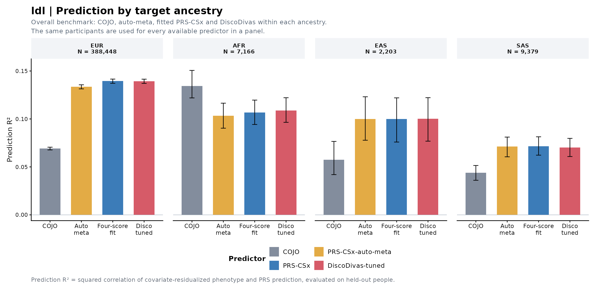
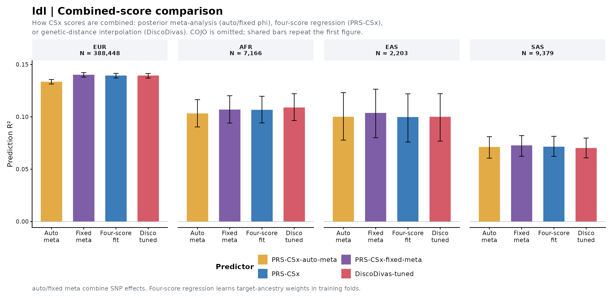
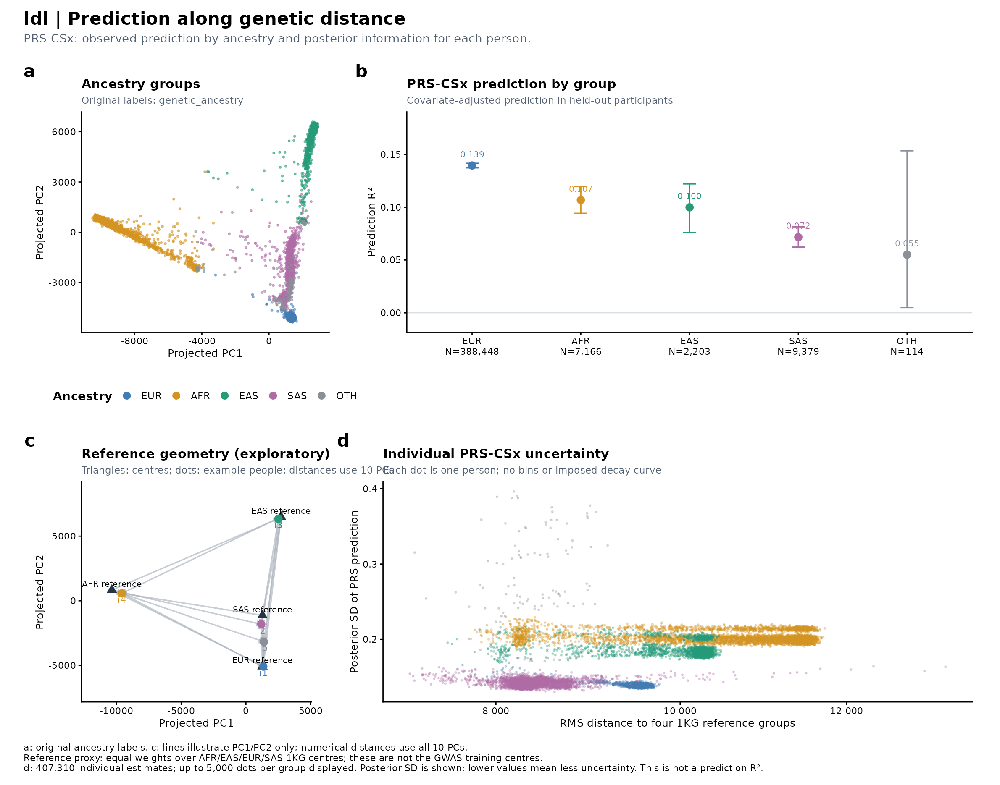
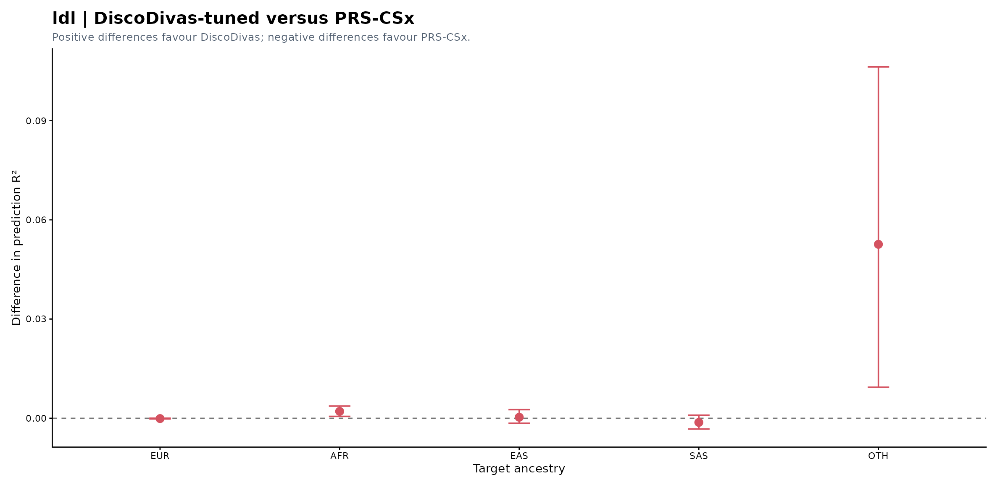
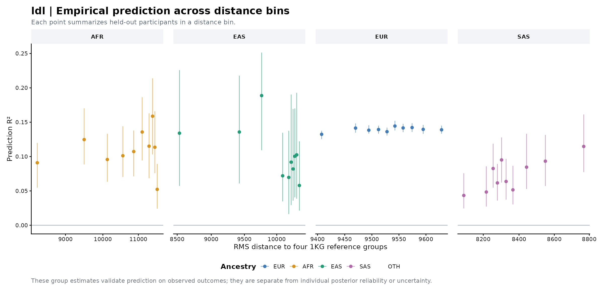

Outcome: ldl · Covariates: age, sex, PC1, PC2, drug.lipid · 5 held-out folds.
Prediction R² is the squared correlation between covariate-residualized observed and predicted phenotypes in held-out participants. It differs from the previous SSE-based partial R², which remains available for comparison.
Equal-weight four-reference distance. Reference centres were selected; this axis is a reference proxy and must not be called distance to GWAS training data.
Performance · Empirical bins · Methods
| Ancestry | N | Prediction R² | Prediction r | SSE-based partial R² | RMSE |
|---|---|---|---|---|---|
| EUR | 388,448 | 0.1395 | 0.3734 | 0.1395 | 0.766 |
| AFR | 7,166 | 0.1067 | 0.3267 | 0.1067 | 0.780 |
| EAS | 2,203 | 0.0999 | 0.3160 | 0.0998 | 0.744 |
| SAS | 9,379 | 0.0716 | 0.2676 | 0.0716 | 0.785 |
| OTH | 114 | 0.0550 | 0.2346 | 0.0317 | 0.836 |





The paired-comparison workbook reports recoverable point estimates. The previous exporter did not retain its paired bootstrap intervals; the existing figure is preserved.
| method | estimate | lower95 | upper95 | N | events | K | P | metric | target | baseline_R2 | full_R2 | delta_R2 | baseline_SSE | full_SSE | RMSE | SSE_partial_R2 | prediction_r |
|---|---|---|---|---|---|---|---|---|---|---|---|---|---|---|---|---|---|
| COJO | 6.9114e-02 | 6.7701e-02 | 0.070544 | 388450 | NA | NA | NA | OOF_prediction_R2 | EUR | 0.096373 | 0.1588300 | 0.062453 | 265120.000 | 246800.000 | 0.79709 | 0.069114 | 0.2629000 |
| PRS-CSx-auto-meta | 1.3363e-01 | 1.3137e-01 | 0.135630 | 388450 | NA | NA | NA | OOF_prediction_R2 | EUR | 0.096373 | 0.2171300 | 0.120750 | 265120.000 | 229690.000 | 0.76897 | 0.133630 | 0.3655600 |
| PRS-CSx | 1.3946e-01 | 1.3719e-01 | 0.141570 | 388450 | NA | NA | NA | OOF_prediction_R2 | EUR | 0.096373 | 0.2223900 | 0.126020 | 265120.000 | 228150.000 | 0.76638 | 0.139460 | 0.3734400 |
| DiscoDivas-untuned | 1.3936e-01 | 1.3701e-01 | 0.141450 | 388450 | NA | NA | NA | OOF_prediction_R2 | EUR | 0.096373 | 0.2223000 | 0.125930 | 265120.000 | 228180.000 | 0.76642 | 0.139360 | 0.3733100 |
| PRS-CSx-fixed-meta | 1.4019e-01 | 1.3800e-01 | 0.142270 | 388450 | NA | NA | NA | OOF_prediction_R2 | EUR | 0.096373 | 0.2230500 | 0.126680 | 265120.000 | 227950.000 | 0.76605 | 0.140190 | 0.3744200 |
| DiscoDivas-tuned | 1.3935e-01 | 1.3707e-01 | 0.141470 | 388450 | NA | NA | NA | OOF_prediction_R2 | EUR | 0.096373 | 0.2223000 | 0.125920 | 265120.000 | 228180.000 | 0.76642 | 0.139350 | 0.3733000 |
| csx.AFR | 4.9208e-02 | 4.8035e-02 | 0.050522 | 388450 | NA | NA | NA | OOF_prediction_R2 | EUR | 0.096373 | 0.1408400 | 0.044466 | 265120.000 | 252080.000 | 0.80556 | 0.049208 | 0.2218300 |
| csx.EAS | 5.6695e-02 | 5.5273e-02 | 0.058144 | 388450 | NA | NA | NA | OOF_prediction_R2 | EUR | 0.096373 | 0.1476000 | 0.051231 | 265120.000 | 250090.000 | 0.80238 | 0.056695 | 0.2381100 |
| csx.EUR | 1.3901e-01 | 1.3670e-01 | 0.141140 | 388450 | NA | NA | NA | OOF_prediction_R2 | EUR | 0.096373 | 0.2219900 | 0.125620 | 265120.000 | 228270.000 | 0.76658 | 0.139010 | 0.3728500 |
| csx.SAS | 3.6444e-02 | 3.5323e-02 | 0.037390 | 388450 | NA | NA | NA | OOF_prediction_R2 | EUR | 0.096373 | 0.1293100 | 0.032932 | 265120.000 | 255460.000 | 0.81095 | 0.036444 | 0.1909000 |
| COJO | 1.3423e-01 | 1.2194e-01 | 0.150610 | 7166 | NA | NA | NA | OOF_prediction_R2 | AFR | 0.033824 | 0.1635200 | 0.129690 | 4880.800 | 4225.700 | 0.76791 | 0.134230 | 0.3663800 |
| PRS-CSx-auto-meta | 1.0325e-01 | 9.0359e-02 | 0.116440 | 7166 | NA | NA | NA | OOF_prediction_R2 | AFR | 0.033824 | 0.1335800 | 0.099759 | 4880.800 | 4376.900 | 0.78153 | 0.103250 | 0.3213300 |
| PRS-CSx | 1.0675e-01 | 9.4236e-02 | 0.119660 | 7166 | NA | NA | NA | OOF_prediction_R2 | AFR | 0.033824 | 0.1369600 | 0.103140 | 4880.800 | 4359.800 | 0.78000 | 0.106750 | 0.3267300 |
| DiscoDivas-untuned | 8.9794e-02 | 7.7655e-02 | 0.101310 | 7166 | NA | NA | NA | OOF_prediction_R2 | AFR | 0.033824 | 0.1205800 | 0.086757 | 4880.800 | 4442.600 | 0.78737 | 0.089794 | 0.2996600 |
| PRS-CSx-fixed-meta | 1.0688e-01 | 9.4095e-02 | 0.120200 | 7166 | NA | NA | NA | OOF_prediction_R2 | AFR | 0.033824 | 0.1370900 | 0.103260 | 4880.800 | 4359.200 | 0.77995 | 0.106880 | 0.3269200 |
| DiscoDivas-tuned | 1.0882e-01 | 9.6477e-02 | 0.122130 | 7166 | NA | NA | NA | OOF_prediction_R2 | AFR | 0.033824 | 0.1389600 | 0.105140 | 4880.800 | 4349.700 | 0.77910 | 0.108820 | 0.3298900 |
| csx.AFR | 6.8602e-02 | 5.8037e-02 | 0.079827 | 7166 | NA | NA | NA | OOF_prediction_R2 | AFR | 0.033824 | 0.1001100 | 0.066281 | 4880.800 | 4546.000 | 0.79648 | 0.068601 | 0.2619200 |
| csx.EAS | 5.6027e-02 | 4.7589e-02 | 0.067345 | 7166 | NA | NA | NA | OOF_prediction_R2 | AFR | 0.033824 | 0.0879560 | 0.054132 | 4880.800 | 4607.400 | 0.80184 | 0.056027 | 0.2367000 |
| csx.EUR | 8.3460e-02 | 7.2088e-02 | 0.095208 | 7166 | NA | NA | NA | OOF_prediction_R2 | AFR | 0.033824 | 0.1144600 | 0.080637 | 4880.800 | 4473.500 | 0.79011 | 0.083460 | 0.2888900 |
| csx.SAS | 2.6774e-02 | 1.9835e-02 | 0.034327 | 7166 | NA | NA | NA | OOF_prediction_R2 | AFR | 0.033824 | 0.0596920 | 0.025868 | 4880.800 | 4750.200 | 0.81417 | 0.026774 | 0.1636300 |
| COJO | 5.7414e-02 | 4.1966e-02 | 0.076581 | 2203 | NA | NA | NA | OOF_prediction_R2 | EAS | 0.038650 | 0.0938400 | 0.055189 | 1354.200 | 1276.500 | 0.76120 | 0.057408 | 0.2396100 |
| PRS-CSx-auto-meta | 9.9970e-02 | 7.7800e-02 | 0.123130 | 2203 | NA | NA | NA | OOF_prediction_R2 | EAS | 0.038650 | 0.1347300 | 0.096084 | 1354.200 | 1218.900 | 0.74382 | 0.099947 | 0.3161800 |
| PRS-CSx | 9.9867e-02 | 7.5929e-02 | 0.122000 | 2203 | NA | NA | NA | OOF_prediction_R2 | EAS | 0.038650 | 0.1345700 | 0.095924 | 1354.200 | 1219.100 | 0.74389 | 0.099781 | 0.3160200 |
| DiscoDivas-untuned | 8.4500e-02 | 6.1216e-02 | 0.106450 | 2203 | NA | NA | NA | OOF_prediction_R2 | EAS | 0.038650 | 0.1198600 | 0.081205 | 1354.200 | 1239.800 | 0.75019 | 0.084470 | 0.2906900 |
| PRS-CSx-fixed-meta | 1.0385e-01 | 8.0099e-02 | 0.126430 | 2203 | NA | NA | NA | OOF_prediction_R2 | EAS | 0.038650 | 0.1384700 | 0.099817 | 1354.200 | 1213.600 | 0.74222 | 0.103830 | 0.3222600 |
| DiscoDivas-tuned | 1.0017e-01 | 7.6833e-02 | 0.122170 | 2203 | NA | NA | NA | OOF_prediction_R2 | EAS | 0.038650 | 0.1348700 | 0.096215 | 1354.200 | 1218.700 | 0.74377 | 0.100080 | 0.3165000 |
| csx.AFR | 3.7568e-02 | 2.4207e-02 | 0.053319 | 2203 | NA | NA | NA | OOF_prediction_R2 | EAS | 0.038650 | 0.0747530 | 0.036103 | 1354.200 | 1303.400 | 0.76917 | 0.037554 | 0.1938200 |
| csx.EAS | 7.1046e-02 | 5.0563e-02 | 0.091420 | 2203 | NA | NA | NA | OOF_prediction_R2 | EAS | 0.038650 | 0.1069200 | 0.068272 | 1354.200 | 1258.000 | 0.75568 | 0.071016 | 0.2665500 |
| csx.EUR | 9.3141e-02 | 7.2701e-02 | 0.116990 | 2203 | NA | NA | NA | OOF_prediction_R2 | EAS | 0.038650 | 0.1281800 | 0.089525 | 1354.200 | 1228.100 | 0.74664 | 0.093125 | 0.3051900 |
| csx.SAS | 2.0334e-02 | 1.1151e-02 | 0.031904 | 2203 | NA | NA | NA | OOF_prediction_R2 | EAS | 0.038650 | 0.0581310 | 0.019481 | 1354.200 | 1326.800 | 0.77605 | 0.020264 | 0.1426000 |
| COJO | 4.4019e-02 | 3.6059e-02 | 0.051478 | 9379 | NA | NA | NA | OOF_prediction_R2 | SAS | 0.116500 | 0.1553900 | 0.038891 | 6217.400 | 5943.800 | 0.79607 | 0.044019 | 0.2098100 |
| PRS-CSx-auto-meta | 7.1220e-02 | 6.0542e-02 | 0.081101 | 9379 | NA | NA | NA | OOF_prediction_R2 | SAS | 0.116500 | 0.1794200 | 0.062923 | 6217.400 | 5774.600 | 0.78467 | 0.071219 | 0.2668700 |
| PRS-CSx | 7.1604e-02 | 6.2243e-02 | 0.081403 | 9379 | NA | NA | NA | OOF_prediction_R2 | SAS | 0.116500 | 0.1797500 | 0.063259 | 6217.400 | 5772.300 | 0.78450 | 0.071601 | 0.2675900 |
| DiscoDivas-untuned | 6.4408e-02 | 5.5673e-02 | 0.075558 | 9379 | NA | NA | NA | OOF_prediction_R2 | SAS | 0.116500 | 0.1734000 | 0.056904 | 6217.400 | 5817.000 | 0.78754 | 0.064407 | 0.2537900 |
| PRS-CSx-fixed-meta | 7.2752e-02 | 6.2363e-02 | 0.082125 | 9379 | NA | NA | NA | OOF_prediction_R2 | SAS | 0.116500 | 0.1807700 | 0.064277 | 6217.400 | 5765.100 | 0.78402 | 0.072752 | 0.2697300 |
| DiscoDivas-tuned | 7.0346e-02 | 6.0820e-02 | 0.079757 | 9379 | NA | NA | NA | OOF_prediction_R2 | SAS | 0.116500 | 0.1786500 | 0.062151 | 6217.400 | 5780.100 | 0.78503 | 0.070346 | 0.2652300 |
| csx.AFR | 2.1732e-02 | 1.5571e-02 | 0.028431 | 9379 | NA | NA | NA | OOF_prediction_R2 | SAS | 0.116500 | 0.1357000 | 0.019201 | 6217.400 | 6082.300 | 0.80530 | 0.021732 | 0.1474200 |
| csx.EAS | 2.8922e-02 | 2.2700e-02 | 0.036181 | 9379 | NA | NA | NA | OOF_prediction_R2 | SAS | 0.116500 | 0.1420500 | 0.025553 | 6217.400 | 6037.600 | 0.80233 | 0.028922 | 0.1700700 |
| csx.EUR | 6.8272e-02 | 5.8926e-02 | 0.077405 | 9379 | NA | NA | NA | OOF_prediction_R2 | SAS | 0.116500 | 0.1768100 | 0.060318 | 6217.400 | 5793.000 | 0.78591 | 0.068271 | 0.2612900 |
| csx.SAS | 2.7777e-02 | 2.1778e-02 | 0.034116 | 9379 | NA | NA | NA | OOF_prediction_R2 | SAS | 0.116500 | 0.1410400 | 0.024541 | 6217.400 | 6044.700 | 0.80281 | 0.027776 | 0.1666600 |
| PRS-CSx-auto-meta | 1.2461e-01 | 2.8714e-02 | 0.257100 | 114 | NA | NA | NA | OOF_prediction_R2 | OTH | 0.040325 | 0.1572700 | 0.116950 | 82.193 | 72.177 | 0.79569 | 0.121860 | 0.3530000 |
| PRS-CSx | 5.5047e-02 | 5.0220e-03 | 0.153360 | 114 | NA | NA | NA | OOF_prediction_R2 | OTH | 0.040325 | 0.0707250 | 0.030400 | 82.193 | 79.589 | 0.83555 | 0.031677 | 0.2346200 |
| DiscoDivas-untuned | 7.8290e-02 | 1.0548e-02 | 0.202210 | 114 | NA | NA | NA | OOF_prediction_R2 | OTH | 0.040325 | 0.1102300 | 0.069902 | 82.193 | 76.206 | 0.81760 | 0.072839 | 0.2798000 |
| PRS-CSx-fixed-meta | 1.2284e-01 | 2.7525e-02 | 0.258420 | 114 | NA | NA | NA | OOF_prediction_R2 | OTH | 0.040325 | 0.1560600 | 0.115740 | 82.193 | 72.280 | 0.79627 | 0.120600 | 0.3504800 |
| DiscoDivas-tuned | 1.0765e-01 | 2.6236e-02 | 0.235070 | 114 | NA | NA | NA | OOF_prediction_R2 | OTH | 0.040325 | 0.1405200 | 0.100200 | 82.193 | 73.612 | 0.80356 | 0.104410 | 0.3280900 |
| csx.AFR | 2.8081e-03 | 1.1675e-05 | 0.036953 | 114 | NA | NA | NA | OOF_prediction_R2 | OTH | 0.040325 | 0.0093917 | -0.030933 | 82.193 | 84.842 | 0.86269 | -0.032233 | 0.0529910 |
| csx.EAS | 4.0628e-02 | 8.9385e-04 | 0.128570 | 114 | NA | NA | NA | OOF_prediction_R2 | OTH | 0.040325 | 0.0707500 | 0.030425 | 82.193 | 79.587 | 0.83554 | 0.031703 | 0.2015600 |
| csx.EUR | 1.0505e-01 | 1.9533e-02 | 0.227970 | 114 | NA | NA | NA | OOF_prediction_R2 | OTH | 0.040325 | 0.1386900 | 0.098363 | 82.193 | 73.769 | 0.80442 | 0.102500 | 0.3241200 |
| csx.SAS | 4.9863e-05 | 2.7644e-05 | 0.036714 | 114 | NA | NA | NA | OOF_prediction_R2 | OTH | 0.040325 | 0.0276620 | -0.012663 | 82.193 | 83.278 | 0.85470 | -0.013195 | 0.0070614 |
| target | method | reason |
|---|---|---|
| OTH | COJO | Missing score input or no ancestry-matched PT |
| method | scores |
|---|---|
| COJO | pt.TARGET |
| PRS-CSx-auto-meta | csx.auto |
| PRS-CSx | csx.AFR,csx.EAS,csx.EUR,csx.SAS |
| DiscoDivas-untuned | disco |
| PRS-CSx-fixed-meta | csx.meta |
| DiscoDivas-tuned | disco.cv |
| csx.AFR | csx.AFR |
| csx.EAS | csx.EAS |
| csx.EUR | csx.EUR |
| csx.SAS | csx.SAS |
# ldl PRS evaluation Outcome: ldl Covariates: age, sex, PC1, PC2, drug.lipid Evaluation: 5-fold out-of-fold predictions; 200 paired subject bootstrap resamples ## Prediction metrics - Continuous: Prediction R² = cor(y - baseline_OOF, full_OOF - baseline_OOF)^2. This is covariate-adjusted squared prediction correlation. All residualization, score standardization and combination fitting use training folds. - OLS full_OOF - baseline_OOF equals the score-weighted, training-covariate-residualized score. No regression is fitted within a held-out distance bin. - Squared correlation does not assess calibration or direction. prediction_r, RMSE, full_R2, baseline_R2, delta_R2 and the former SSE_partial_R2 remain in Yeval.comparison.xlsx. - Binary: main metric is logistic AUC; baseline_AUC, delta_AUC, paired delta intervals and Brier are also saved. No unvalidated liability conversion is applied. - Survival: main benchmark is covariates + PRS Harrell C. Comparisons use within-fold comparable pairs. The ancestry and empirical distance panels show delta_C to isolate PRS increment. - These metrics follow common PRS reporting conventions but are not a numerical reproduction of any publication, because training data, covariates, splits and outcomes differ. ## Four panels - a: original ancestry labels in PC space. b: empirical group prediction (R² or delta discrimination). c: separate geometric illustration with four source centres and representative real people. d: one individual per posterior point. - The first bar chart is the overall method benchmark including COJO. The second isolates combined-score strategies, omits COJO and adds fixed-meta; repeated bars are identical. - The DiscoDivas difference chart follows the four-panel figure. Empirical bins are a separate validation figure after that. ## Posterior model and interpretation - All four population beta draws share a retained iteration within a chromosome. Individual score covariance includes SNP LD and all cross-population covariance terms. - Scores are centred at harmonized discovery EAF. Missing genotypes are mean-imputed at the same EAF. The posterior means replace the four old uncentred scores for fitting, so means, scales and covariance refer to one predictor. - Chromosome means and covariance matrices are summed under PRS-CSx chromosome independence. Independent chromosomes are not artificially coupled by matching iteration numbers. - With training-fold weights w = regression_coefficient / training_score_SD, individual prediction variance is w^T Sigma_i w. Both diagonal-only and cross-population contributions are saved. - If an external genetic variance Vg on the correct scale is supplied, model-based individual R² = 1 - w^T Sigma_i w / Vg. For a continuous phenotype, supplied residual SNP h² is multiplied by training-fold covariate-residual phenotype variance. - This stacked-CSx reliability is an exploratory extension conditional on fitted combination/covariate weights and the supplied Vg, not an established equivalence to LDpred2 reliability. It requires model calibration and compatible priors/scales. It is not empirical phenotype prediction R². - Negative model-based reliability is retained as a diagnostic of variance scaling, uncertainty or model mismatch. No clipping, artificial dots or forced decay is applied. - If genetic variance is absent, d reports posterior SD explicitly; it is uncertainty, not accuracy. For survival this is SD of the PRS log-hazard contribution; for binary outcomes SD of log-odds. Liability h² cannot be used in their place. - Bootstrap intervals condition on fixed OOF fits. Posterior covariance conditions on GWAS summary statistics, LD reference and fitted combination weights; neither accounts for all sources of model misspecification. ## Genetic distance Equal-weight four-reference distance. Reference centres were selected; this axis is a reference proxy and must not be called distance to GWAS training data. - Discovery centres must be means in the same PCA coordinate system, with source and pca_space identifiers. Multiple source groups use N_GWAS-weighted RMS distance, retaining distances to every group in the individual table. - A mixture centroid alone can conceal large distance from every actual training group. RMS distance avoids that cancellation, but is a descriptive extension, not a proven predictor of multi-ancestry accuracy. - Without discovery centres, a clearly labelled equal-weight four-reference proxy is used. It is not the former EUR-only distance and is never called a GWAS training distance. - At most 10 empirical quantile bins per ancestry; minimum 100 people, and for dt/t2e 20 events/cases plus non-events/controls. Sparse bins are not used to infer precise trends. ## References - PRS-CS: https://doi.org/10.1038/s41467-019-09718-5 - PRS-CSx: https://doi.org/10.1038/s41588-022-01054-7 - Individual accuracy: https://doi.org/10.1038/s41586-023-06079-4 - Source method: https://github.com/yidingdd/individual-pgs-accuracy/tree/main/pgs-accuracy